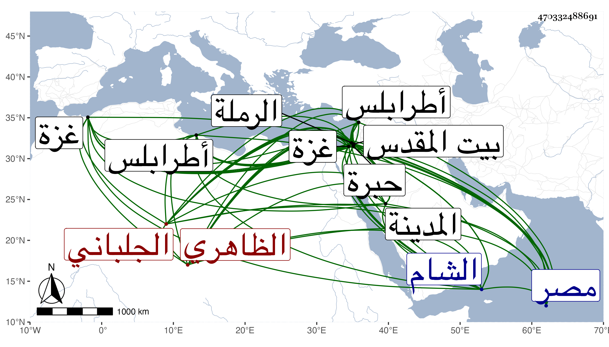

0902Sakhawi.DawLamic.ITO20230111-ara1.EIS1600.470332488691
Biography ID: 470332488691
834
أركماس الجلباني قرا سنقر الظاهري جقمق . رقاه المؤيد حتى صار أحد المقدمين بالديار المصرية ثم أعطاه نيابة غزة ثم نقله ططر إلى نيابة طرابلس ثم خرج إلى الطاعة فأمسك وأقام بالمدينة النبوية نحو عام ثم بالقدس زيادة على عشرة أعوام ثم ولي نظر القدس والخليل ونيابة القدس فلم تحمد سيرته فعزل وأعطى تقدمة بالشام ومات بالرملة في جمادى الأولى سنة ثمان وثلاثين وحمل إلى القدس فقبربه ، قال شيخنا في آخر سنة سبع وثلاثين من أنبائه : وقدم جماعة من المقادسة والخليلية يشكون من نائبها أركماس الجلباني أنواعا من الظلم والأذية بجميع الطوائف ومما اعتمده أنه حبس القاضي شمس الدين البصروي وهو يومئذ قاضي الشافعية به وزعم أنه استنقذه من العوام لئلا يرجموه وحجر على المياه التي ببيت المقدس فختم على الآبار ومنع الناس من الاستسقاء منها إلا بثمن إلى غير ذلك فلما علم السلطان بسيرته أمر بعزله وقرر غيره في الأمر .
